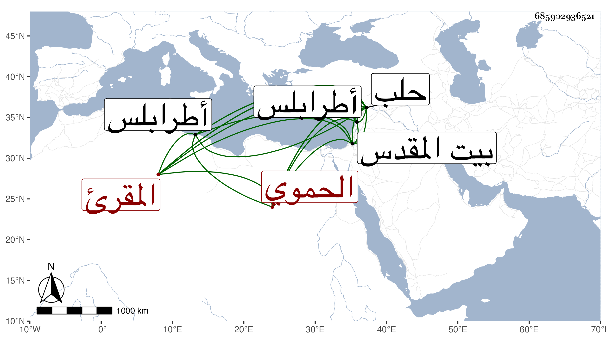

0902Sakhawi.DawLamic.ITO20230111-ara1.EIS1600.685902936521
Biography ID: 685902936521
777
أحمد الحموي المقرئ ، نزيل حلب رجل صالح دين ورع أقام بحلب سنين يقرئ الناس القرآن ويكثر التلاوة والعبادة غير ملتفت إلى الدنيا أصلا وفارقها قبل الوقعة فسكن القدس مدة ثم انتقل إلى طرابلس وتزوج حينئذ بها ومات فيها وجاء الخبر بذلك إلى حلب في شوال سنة سبع عشرة فصلى عليه بجامعها صلاة الغائب ، ذكره ابن خطيب الناصرية وهو ممن قرأ عليه القرآن .
